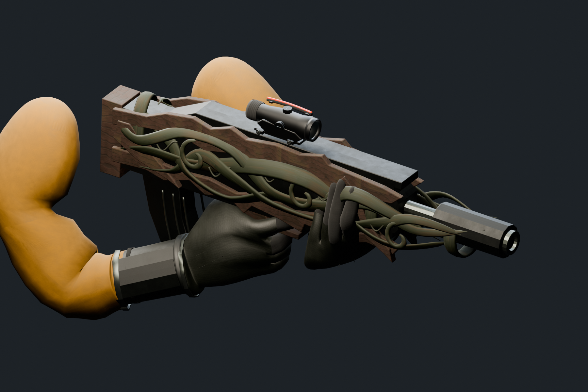
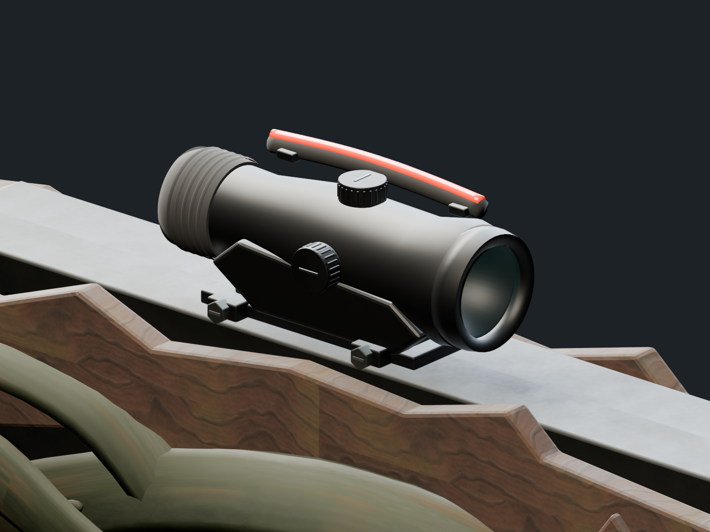
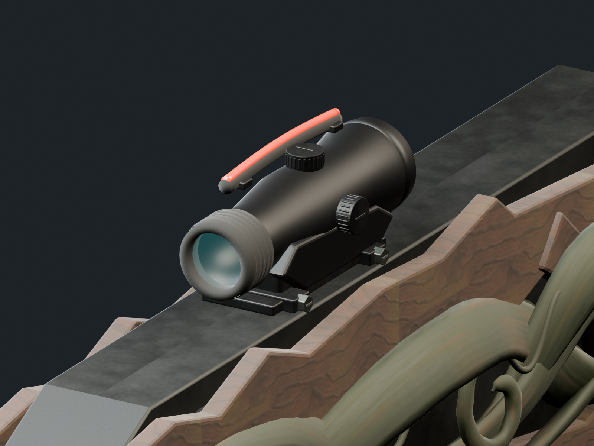
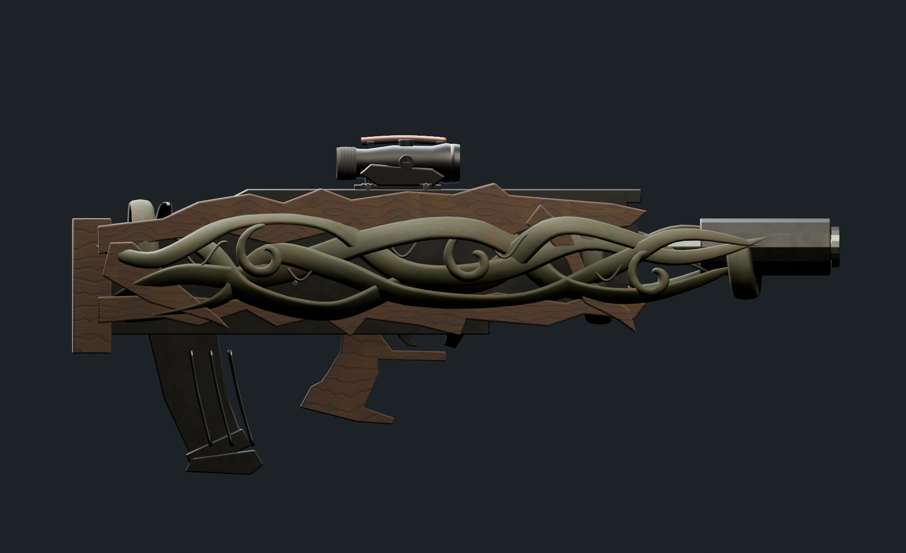
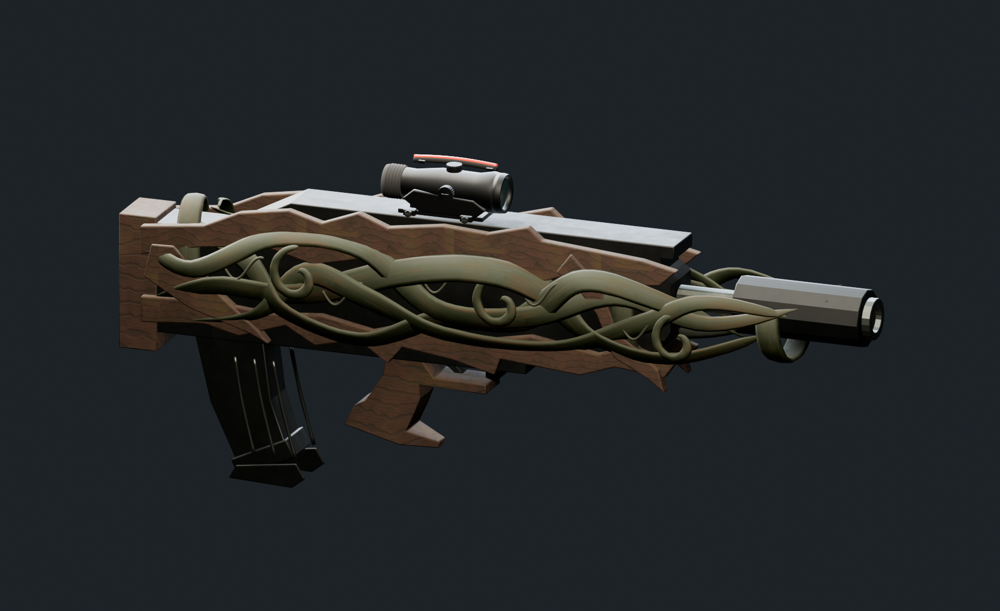
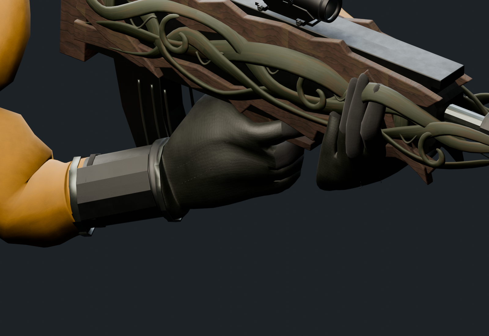
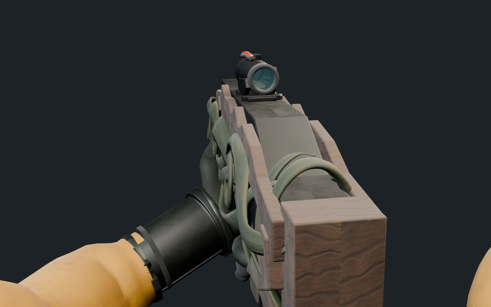
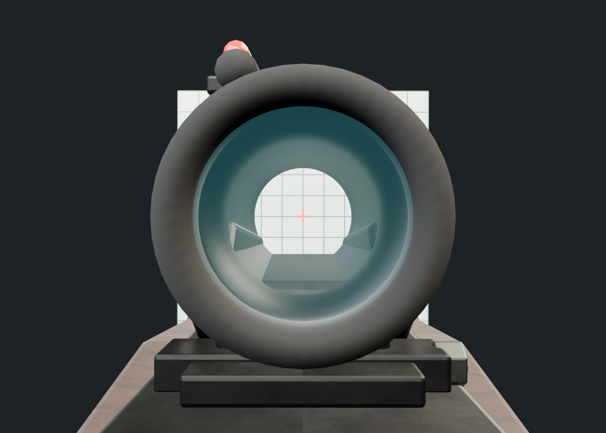
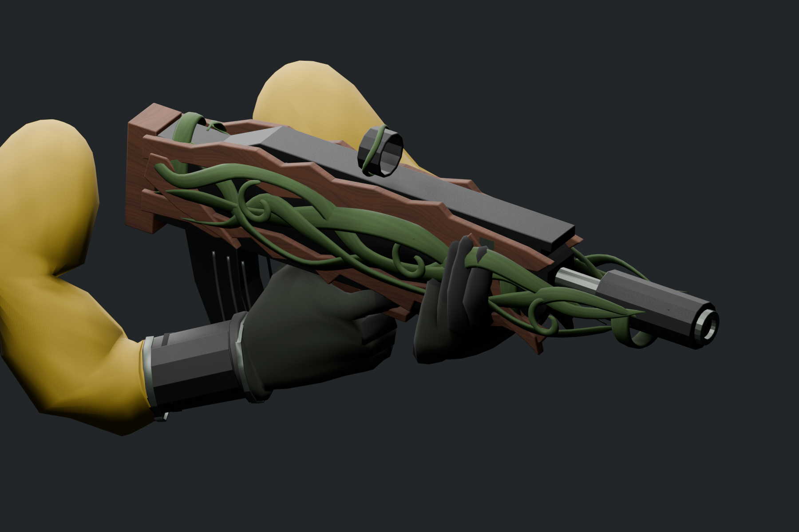

PURGERS / ART ITERATION 02 / 2026.09.25自然表面，獨立 ACOG 鏡體
木材、藤蔓、金屬、皮革與織布往寫實方向調整。保留原骨架與六段動作，鏡體提供獨立輸出，方便後續更換。

第二版 · 實際模型渲染
本輪已依確認先做外觀與視線配置。2.5× 是預定遊戲倍率，尚未實作放大、遊戲準星與 Unity 鏡內成像。
ACOG 造型模組

鏡身、調整鈕、固定座及紅色導光條
目鏡護圈與鏡片 · 五種用途的網格分開外形與表面

沿用原武器比例，增加自然表面差異

斜角 · 木質、藤蔓與金屬
手套紋理、縫線、護腕與布料第一人稱與鏡軸

Blender 審閱視角；非 Unity 正式相機
開鏡末幀對軸 · 格線與十字為檢查背景，沒有匯出為遊戲準星換彈預覽
原 Reload.001 動作 · 24 fps
與第一版比較

第一版 · 原先色彩與簡單圓環準星第二版 · PBR 表面與獨立 ACOG 造型驗證與交付邊界
63原骨骼
6來源動作
9 / 9鏡軸通道取樣通過
67,756三角形，尚待效能整理
完整 FBX 與獨立鏡體均重新匯入檢查。六段動作逐整數幀比對 10,395 個骨骼位置，最大誤差小於 0.001 mm。仍需在 Unity 核對實際相機、材質、動畫混合與穿模；原灰盒部分輪廓尚待美術精修。